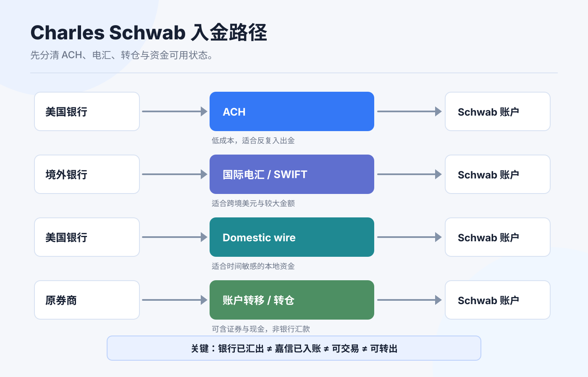
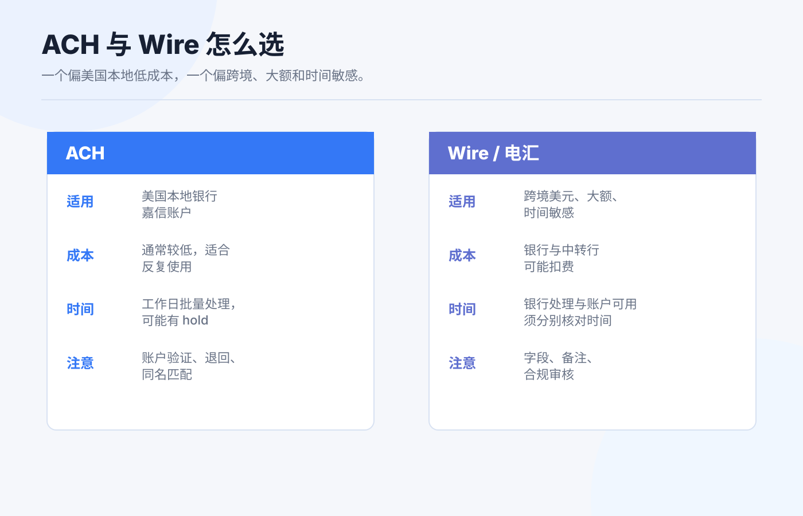

Charles Schwab 入金路径整理：电汇、ACH 与到账时间
嘉信账户开好以后，第一笔入金最容易让人紧张。
很多人会问：“ACH 快还是电汇快？多久能到账？到账后能不能马上买？” 这些问题要拆开看。到账、可交易、可转出、可撤回、银行扣费 是不同层面的状态，不是一件事。
如果你把它们混在一起，就会出现几个典型误会：页面显示钱到了，但暂时不能提现；电汇当天到达，但中转行扣了费用；ACH 看起来免费，但并不适合跨境美元入金；国际账户能不能用某个功能，还要看账户实体和居住地。
还没有完成账户定位和开户材料判断时，先回到嘉信开户前的账户角色与准备清单；入金方式只有与真实账户类型和长期用途匹配时才有意义。
本文为基于公开资料的嘉信入金路径核对框架，不构成投资、税务或法律建议，也不是开户、换汇或跨境汇款建议。Schwab International 与美国本土账户的可用功能可能不同；本文不展示作者电汇、ACH 或到账时长记录。实际操作前请以账户内 Transfers & Payments 页面、客服和官方费用表为准。资料核对日期：2026-08-23。

查看原图（新窗口，可缩放）
先分清三种“到”
入金讨论里，最重要的是把三个时间点拆开：
| 状态 | 含义 | 你该检查什么 |
|---|---|---|
| 银行已汇出 | 你的银行已经把钱发出 | 汇款凭证、金额、币种、收款银行、备注。 |
| 嘉信已入账 | Schwab 账户里出现现金余额 | 是否匹配账户、是否有中转扣费、是否显示 hold。 |
| 可交易 / 可转出 | 这笔钱可用于下单或转走 | 可用现金、可提款现金、资金可用日期。 |
新手最常见的问题，是看到第二个状态就以为第三个状态也完成了。尤其是 ACH 和部分电子转账，券商可能先显示余额，但仍有清算、退回或出金限制。
ACH：适合美国本地银行和嘉信之间
ACH 是美国本地银行间电子支付网络。Nacha 官方说明里提到，ACH Network 用于 Direct Deposit 和 Direct Payment，可以在美国银行和信用合作社账户之间发送和接收款项；ACH 支付可以在同一工作日数小时内处理，也可以安排在之后一两个工作日。
对嘉信用户来说，ACH 适合这些情况：
1. 你有美国本地银行账户。 2. 银行账户和嘉信账户是本人同名。 3. 你计划长期、反复、小额或中等金额入出金。 4. 你能接受银行工作日、清算和可能的 hold period。
ACH 不适合这些情况：
1. 你只有香港、新加坡、中国内地或其他非美国银行账户。 2. 你想把跨境电汇伪装成本地 ACH。 3. 你急着当天大额到账并立即转走。 4. 账户名、地址、税务身份或资金来源解释不清。
ACH 的重点不是“最便宜”，而是“美国本地账户之间最顺手”。如果你没有美国本地银行关系，ACH 通常不是你的第一条路径。
这里的账户条件还要落实到具体服务。Schwab MoneyLink 条款第 1 节将该服务限定为 Schwab 与美国境内金融机构之间的本地交易。持有美元余额或美国 routing number，并不自动证明该外部账户可绑定；应核对金融机构所在地、账户归属及 Schwab 的接受条件。不能把 MoneyLink 的限制直接当作所有 ACH 服务的完整规则。
Wire / 电汇：适合跨境或较大金额
Wire 更适合跨境美元、较大金额或需要正式银行凭证的场景。美国本地 wire 可能使用 Fedwire；跨境美元常见 SWIFT 和中转行。
Federal Reserve 对 Fedwire Funds Service 的说明是：它是银行、企业和政府机构用于关键、同日交易的电子资金转账服务，付款记入 Federal Reserve Bank master account 后具有最终性。
对个人投资者来说，电汇要关注这些字段：
| 字段 | 为什么重要 |
|---|---|
| 收款银行 | 不同账户、不同币种可能有不同收款银行。 |
| ABA / routing number | 美国本地 wire 或 ACH 可能用不同 routing。 |
| SWIFT / BIC | 跨境美元电汇常见字段。 |
| 收款人名称 | 可能是 Charles Schwab & Co., Inc. 或指定 FBO 结构，以页面为准。 |
| 账号 / For further credit | 用来匹配你的个人嘉信账户。 |
| 备注 / Reference | 漏填可能导致人工匹配或延迟。 |
电汇的优势是正式、适合大额、跨境可用性更强；缺点是费用更高，且中转行、汇出行、收款行都可能影响最终到账金额和时间。

查看原图（新窗口，可缩放）
嘉信费用表里能确认什么
以下按 2026 年 9 月 12 日核对的 Charles Schwab 官方 Pricing Guide for Individual Investors（2026 年 4 月版）整理，金额均为美元。这份指南也适用于其所述国际客户，但 Charles Schwab, Hong Kong, Ltd. 客户另有收费指南；部分客户可能适用不同定价或费用减免，不能仅凭“嘉信账户”四个字套用。
| 项目 | 费用口径 |
|---|---|
| Incoming wire transfer | No fee |
| Outgoing wire transfer | $25 per transfer；线上提交为 $15 per transfer |
| 全部资产转出（Transfer out of assets — Full） | $50 per account |
| 部分资产转出（Transfer out of assets — Partial） | $0 per account |
| 外汇换算 | USD 与外币互换时，Schwab 可收取最高 3% 的 markup；不包括中介金融机构可能收取的额外费用 |
资产转出与电汇汇出是官方表中的不同收费项目，不要把全部资产转出的 50 美元当作每笔现金电汇的手续费。这几个数字解决的是“嘉信收费”问题，不等于你的全链路成本。跨境电汇时，汇出银行、中转行和收款路径都可能产生费用；如果涉及换汇，还要看汇率点差和用途申报。
截至 2026 年 8 月 23 日，Schwab International 当前账户页也明确列出 Schwab One International 最低入金为 0 美元，开户和维护本身不收费。这个结论只针对当前通用账户口径；居住地资格、可用入金方式、产品功能和其他费用仍要按实际申请路径与账户文件核对，不能引用旧版申请 PDF 代替当前页面。
到账时间怎么理解
到账时间不宜写成一个绝对数字，因为它取决于账户类型、汇出银行、付款网络、币种、时间点、节假日和风控审核。可以用这个框架判断：
| 路径 | 处理与可用性要分开看 | 主要变量 |
|---|---|---|
| ACH / MoneyLink | 网络结算、账户入账与资金可用是不同节点，不能统一写成“1–2 天就能用” | 发起方向、所用服务、银行截止时间、退回风险与账户限制。 |
| 美国本地 wire | Fedwire 的同日银行间处理能力，不等于个人券商账户当天可用的保证 | 银行截止时间、收款信息、账户匹配与人工审核。 |
| 国际电汇 / SWIFT | 本文不提供统一到账天数；按具体银行预计时间追踪，并向嘉信核对入账及可用状态 | 汇出行、中转行、收款行、合规审核、节假日。 |
2026 年 9 月 12 日核对的 MoneyLink 条款（2025 年 1 月版）第 7 节说明：通过该服务收到的 ACH 资金可能有不超过三个工作日的保留期；期间可以用于部分不要求已清算资金的业务，但不得提款或用于要求已清算资金的交易，例如期权或低价股交易。这不是“从提交起最多三天全部可用”的承诺，也不能套用到其他入金服务或另行受限的账户。实际可交易、可提款金额应分别查看账户提示。
在已确认账户资格、资金用途、银行规则和收款指引都允许的前提下，可以考虑小额验证，并记录“提交时间、银行扣款时间、嘉信入账时间、可交易时间、可转出时间、费用”。一次成功只说明该笔记录的结果，不能证明后续不同金额、用途或日期的转账都能通过；不要拆分交易规避限额或审核。
这组时间点也可以放进从本地货币到第一笔海外资产的完整资金链记录，与换汇、下单和未来出金一起复盘。
入金前检查清单

查看原图（新窗口，可缩放）
电汇或 ACH 前，建议检查 9 件事：
1. 付款账户是否本人同名。 2. 账户类型是否支持当前路径。 3. 币种是不是 USD，是否需要先换汇。 4. 收款信息是否从 Schwab 当前页面复制。 5. routing / SWIFT / 账号 / reference 是否完整。 6. 汇出银行是否会收手续费。 7. 中转行是否可能扣费。 8. 到账后可交易和可转出时间是否清楚。 9. 汇款凭证、银行流水和嘉信入账记录是否保存。
如果是国际账户，还要额外确认：所在地区是否支持 ACH、wire instructions 是否与美国本土账户相同、是否有最低资金或账户维护要求、客服是否要求补充资金来源文件。
如何判断入金路径
有美国银行账户、常规小额入出金： 优先 ACH。成本低，长期维护方便，但不要把它当成跨境路径。
没有美国银行账户、从境外汇美元： 优先看国际电汇。先在嘉信账户内确认 wire instructions，再从本人同名银行汇出。
金额较大或时间敏感： 倾向 wire，但要在银行截止时间前操作，并预留人工审核空间。
第一次入金： 先确认路径与资金用途是否被双方机构允许，再决定是否小额验证。后续每笔仍须核对限额、费用及资料要求，不能把测试成功视为提高金额或绕过审核的依据。
路径解释不清： 先停。能汇出去不等于以后不会被审查，能到账不等于资金用途没有问题。
保存本次记录，供下次复核
把已经核实的收款指引、费用和实际记录写进账户手册，便于下次逐项复核。银行规则、账户权限或资金用途变化时，应重新确认；历史成功记录不能代替当前审核。
参考资料
- Charles Schwab International, U.S. Investing Brokerage Account.
- Charles Schwab, Charles Schwab Pricing Guide for Individual Investors.
- Nacha, ACH Payments Fact Sheet.
- Federal Reserve Financial Services, Fedwire Funds Service.